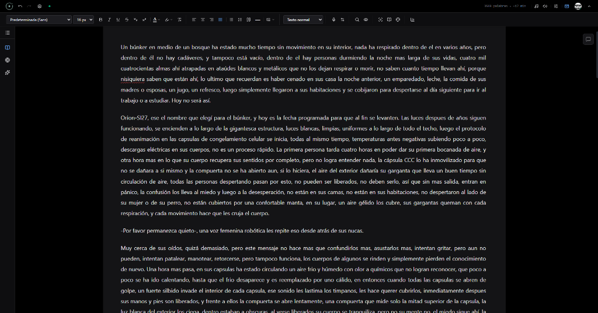
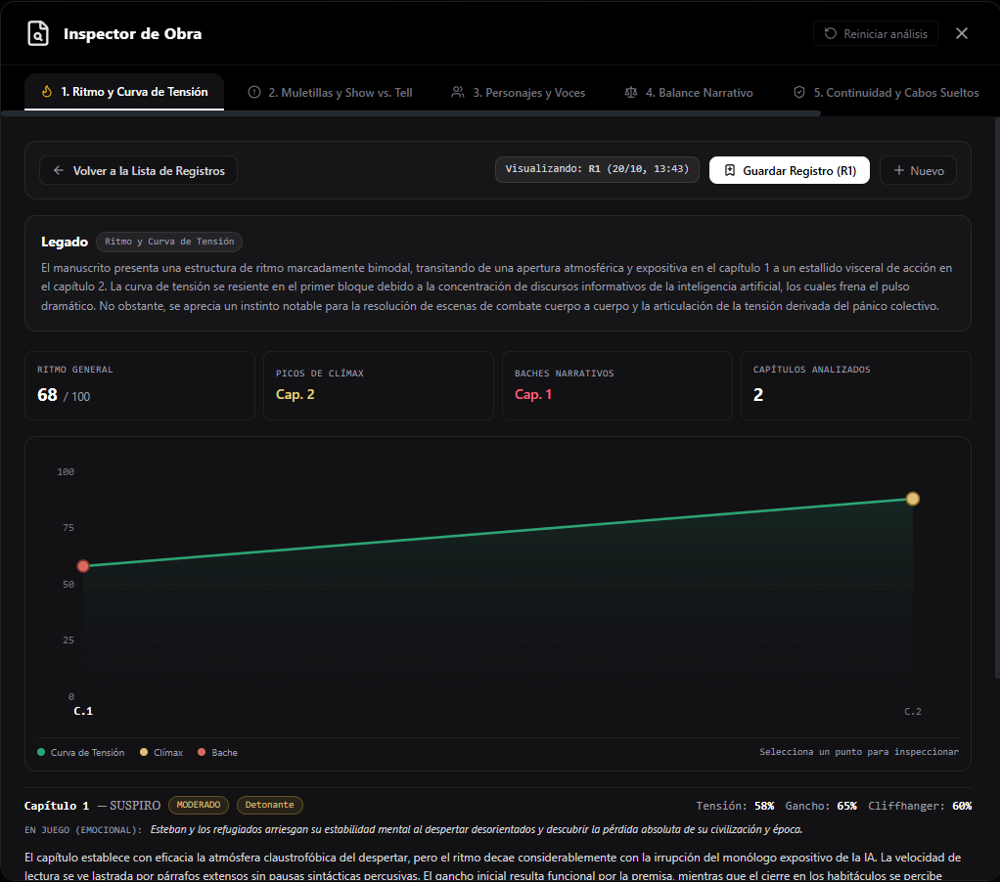
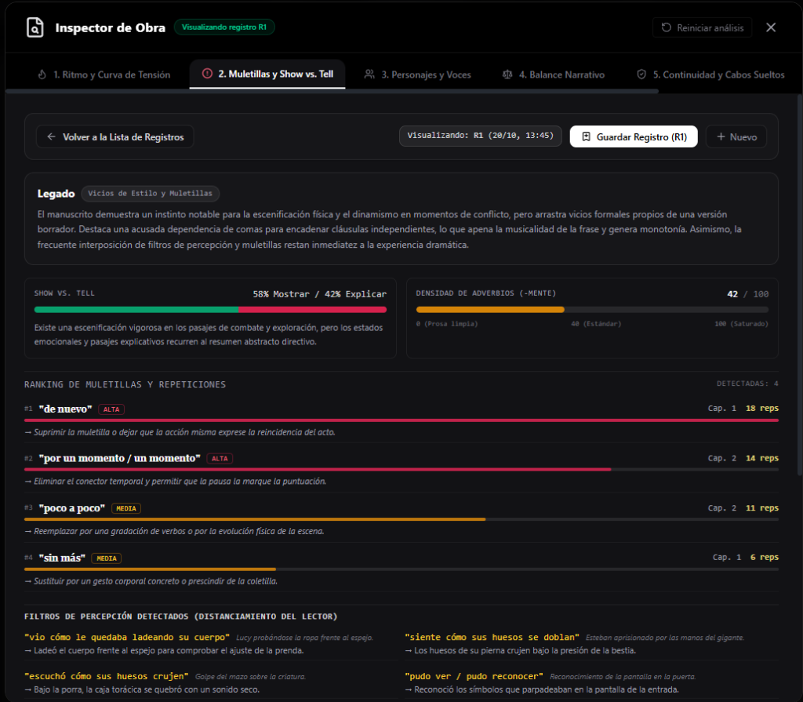
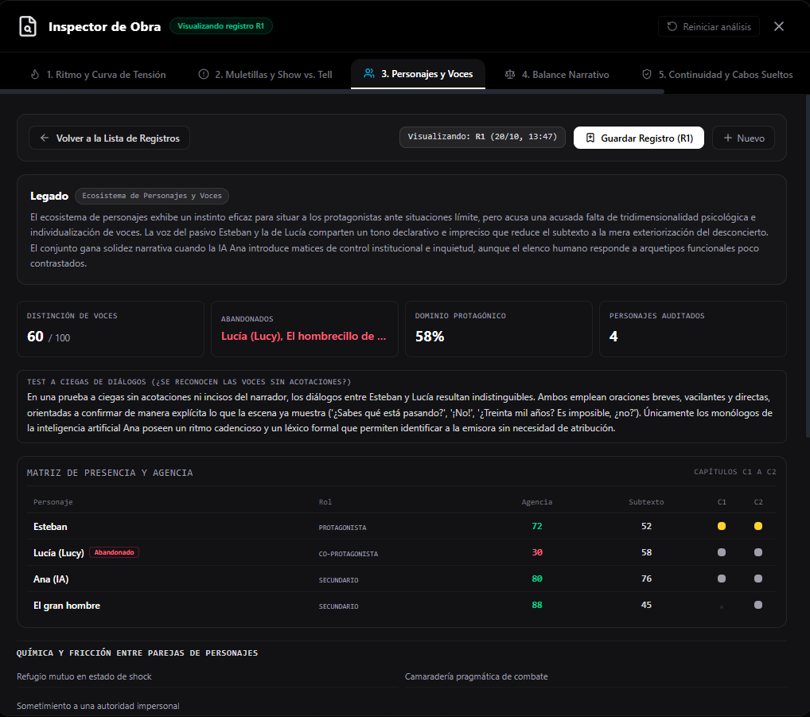
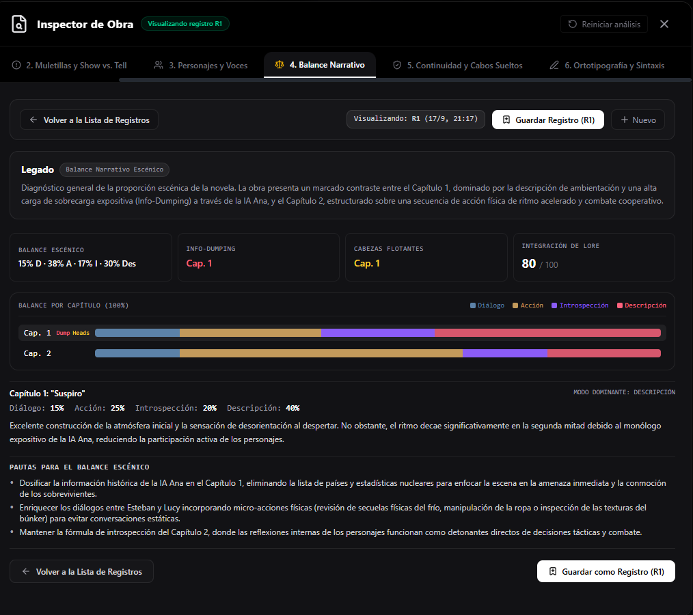
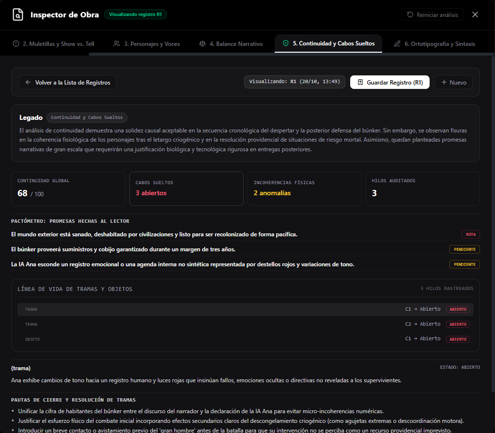

El Sistema Operativo para Escritores de Ficción
Un santuario editorial para construir mundos complejos, comparar revisiones en pantalla dividida 50/50, analizar el ritmo de tu prosa y escribir en un Modo Zen inmersivo. Todo guardado localmente en tu equipo.
- Hoja de Trabajo 100% Local (.novel)
- Modo Zen & Paisajes Sonoros
- Inspector de Obra y Continuidad
- Asistencia IA Privada (BYOK)
- Sin Suscripciones Forzadas
La Hoja de Trabajo Principal: Un refugio sereno para tu prosa
Diseñada para que la tecnología desaparezca y solo queden tus ideas. Un lienzo libre de fricción, con estructura capitular fluida y la absoluta certeza de que cada palabra te pertenece.

Tipografía y Margen Diseñados para Horas de Escritura
Tipografías editoriales minuciosamente calibradas, interlineado orgánico y notas discretas al margen que jamás invaden tu campo visual. Escribe con la comodidad y calidez de un libro ya impreso.
Árbol Capitular y Delimitación Viva de Escenas
Navega con ligereza entre actos, capítulos y secuencias. Ajusta los marcadores de inicio y fin de escena directamente sobre el texto y reorganiza tu trama sin perder jamás el hilo de la historia.
Bóveda Local y Archivos .novel Soberanos
Cero dependencias de nubes ajenas o servidores remotos. Tus manuscritos viven exclusivamente en tu disco duro en formato abierto .novel, respaldados por un sistema automático de versiones históricas.
Modo Zen & Santuario Sensorial: Aísla el ruido exterior
Escribir exige una concentración sagrada. Enciende un entorno donde toda la interfaz se desvanece suavemente para dejarte a solas con tus palabras, envuelto en atmósferas vivas, música serena y paisajes sonoros envolventes.
Atmósferas Visuales en Alta Definición
Transforma tu espacio de trabajo con fondos inmersivos: Auroras Boreales etéreas, Cumbres Brumosas, Santuarios Forestales o fondos neutros de oscuridad profunda. Tu pantalla se convierte en una ventana a la calma.
Música de Concentración y Paisajes Sonoros
Sintoniza pistas exclusivas de enfoque como Clean Soul, o combina a tu gusto capas de lluvia suave sobre cristales, viento entre abetos, el crujido templado de una chimenea y el murmullo lejano de una cafetería.
Cadencia Mecánica de Máquina de Escribir
Activa de forma opcional el sonido táctil de pulsación analógica para dotar a tu sesión del ritmo, la cadencia y el peso nostálgico de los antiguos despachos de escritores.
El Inspector de Obra: La radiografía viva de tu manuscrito
No adivines la solidez de tu novela. El Inspector somete tu texto a un diagnóstico narrativo implacable: mide el pulso dramático, purga vicios de estilo, audita las voces del reparto, calibra el balance escénico y rastrea cada cabo suelto antes de llegar al lector.

Curva de Tensión y Detección de Baches
«El manuscrito presenta una estructura de ritmo marcadamente bimodal... La curva de tensión se resiente en el primer bloque debido a la concentración de monólogos expositivos, los cuales frenan el pulso dramático.»
- Curva interactiva punto a punto: Traza la progresión de tensión en cada capítulo con identificación visual de clímax, mesetas y valles de desinterés.
- Mapeo de Apuestas (Stakes): Clasifica si lo que arriesga el protagonista es de naturaleza física, emocional, moral o social, garantizando consecuencias reales.
- Telemetría de Ganchos & Cliffhangers: Evalúa la potencia magnética de apertura de cada escena y el tirón del cierre para evitar deserciones lectoras.

Show vs. Tell y Filtros de Percepción
«Destaca una acusada dependencia de comas para encadenar cláusulas independientes, lo que apaga la musicalidad de la frase. Asimismo, la frecuente interposición de filtros de percepción resta inmediatez dramática.»
- Erradicación de Filtros de Percepción: Localiza distanciadores como «vio cómo le quedaba...» o «siente cómo se doblan...» y te propone reescrituras directas e inmersivas en voz activa.
- Ranking de Repeticiones Inconscientes: Identifica muletillas como «de nuevo» (18 reps), «por un momento» o «sin más» jerarquizadas por su severidad de impacto.
- Termómetro de Adverbios y Clichés Somáticos: Audita el abuso de adverbios en -mente y expresiones trilladas («tragó saliva», «apretó los puños») oxigenando tu estilo.

Test a Ciegas de Diálogos y Agencia
«En una prueba a ciegas sin acotaciones ni incisos del narrador, los diálogos entre Esteban y Lucía resultan indistinguibles... La voz de la IA Ana introduce matices de control institucional e inquietud con ritmo cadencioso.»
- Test a Ciegas de Diálogo: Comprueba si tus personajes son reconocibles por su sintaxis, léxico y modismos personales cuando se eliminan las acotaciones del autor.
- Matriz de Presencia y Agencia: Mide el nivel de iniciativa proactiva de cada miembro del elenco y la riqueza de su subtexto frente a discursos meramente informativos.
- Detector de Personajes Abandonados: Te advierte si personajes con peso inicial en la trama desaparecen súbitamente sin una despedida o justificación narrativa.

Balance Escénico y Detección de Info-Dumping
«Marcado contraste entre el Capítulo 1, dominado por descripción y sobrecarga expositiva (Info-Dumping) a través de la IA Ana, y el Capítulo 2, estructurado sobre combate cooperativo y acción acelerada.»
- Cuadrante de Proporción Escénica: Gráfico acumulativo por capítulo de Diálogo, Acción, Introspección y Descripción para asegurar una digestión rítmica óptima.
- Cazador de Info-Dumping: Localiza momentos en que la ambientación o el worldbuilding se convierten en enciclopedia y asfixian el conflicto inmediato.
- Alerta de Cabezas Flotantes (Talking Heads): Detecta charlas en el vacío y sugiere micro-acciones físicas (manipular ropa, mirar termómetros) para devolver anclaje sensorial a la escena.

El Pactómetro y Línea de Vida de Tramas
«Solidez causal aceptable... Sin embargo, se observan fisuras en la coherencia fisiológica de los personajes tras el letargo y quedan planteadas promesas que requerirán justificación tecnológica rigurosa.»
- El Pactómetro (Pactos con el Lector): Supervisa promesas implícitas o explícitas catalogándolas como Cumplidas, Pendientes o peligrosamente Rotas.
- Línea de Vida de Tramas y Objetos: Aplica el principio de Chéjov para armas, cartas, llaves y subtramas, asegurando que cada artefacto sembrado tenga un cierre merecido.
- Detección de Agujeros de Trama: Previene inconsistencias numéricas, saltos cronológicos ilógicos o recursos providenciales no justificados antes de enviar a imprenta.
Asistencia de IA Personalizada: Un confidente que respeta tu voz
La inteligencia artificial jamás debe sustituir tu imaginación; su propósito es ser tu lector beta más incisivo, tu tutor de confianza y el faro que disipa la niebla cuando la página en blanco se resiste.
Embellecimiento de Prosa
Pule metáforas, enriquece adjetivaciones y afina el ritmo poético de un párrafo difícil conservando intacto tu registro y personalidad autoral.
Continuación de Escena
Supera el bloqueo creativo explorando propuestas de continuación coherentes con los eventos, la atmósfera y el tono previo del capítulo.
Chat Creativo con Memoria de Lore
Debate ideas y giros con un confidente literario que recuerda las fichas de tus personajes, sus motivaciones secretas y las reglas de tu mundo.
Opinador Crítico & Lector Beta
Obtén una primera lectura imparcial: verosimilitud de reacciones, ritmo del suspense y sugerencias honestas antes de compartir tu borrador.
Tutor Literario de Técnica
Consulta dudas sobre subtexto, profundidad psicológica, 'mostrar vs decir' y recursos dramáticos para elevar la maestría de tu manuscrito.
Cronología y Coherencia Temporal
Reconstruye líneas temporales complejas y valida edades, viajes y acontecimientos históricos para que las fechas calcen sin fisuras.
Comienza gratis. Tu obra siempre es tuya.
Sin bloqueos sobre tus archivos ni letras pequeñas: tus manuscritos viven en tu disco duro en todo momento.
Un taller de escritura local-first completo y funcional para escribir tu novela de principio a fin sin costo.
-
Lienzo editorial completo: Capítulos y escenas ilimitados en archivos
.novel100% locales con Bóveda de Copias de Seguridad. - Construcción de Mundo esencial: Hasta 5 personajes, 5 razas, 5 criaturas y 3 conceptos clave (con protección Soft-Lock).
- Planeación de Trama: 1 línea de trama principal con hasta 20 eventos e hitos narrativos cronológicos.
- Embellecimiento de Prosa: 6 estilos literarios esenciales incluidos (Poético, Minimalista, Épico, Íntimo, Gótico y Crudo).
- Atmósfera Sonora & Zen: 3 piezas selectas de música moderna + efectos ambientales de Lluvia y Viento.
- Exportación estándar de tu manuscrito y privacidad por diseño sin cuentas obligatorias.
Desbloqueo total de ingeniería literaria, cartografía interactiva, linajes dinámicos y suite analítica de prosa.
- Construcción de Mundo Ilimitada: Personajes, razas, bestiario, fauna y conceptos infinitos sin ninguna restricción.
- Mapas & Cartografía Interactiva: Diseña mapas geográficos del mundo y ubica marcadores de locación enlazados a tus escenas.
- Árbol Genealógico Interactivo: Familias, dinastías y linajes con ramas y lazos dinámicos ilimitados.
- Planeación de Trama Avanzada: Tramas y subtramas múltiples ilimitadas con Línea del Tiempo IA.
- Suite Completa de Prosa: Catálogo total de estilos, Estilo a la Inversa (extracción con IA) y Perfiles Personalizados.
- Inspector de Obra: Auditoría analítica global del manuscrito y puente de análisis con NotebookLM.
- Atmósfera Sonora Completa: +30 piezas orquestales, paisajes sonoros completos y subida de pistas personalizadas.
- Multi-dispositivo: Activación hasta en 5 computadoras por usuario y sincronización de licencia en tu cuenta de Google.